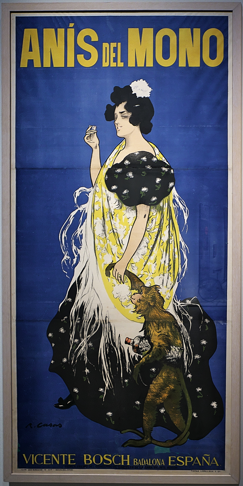
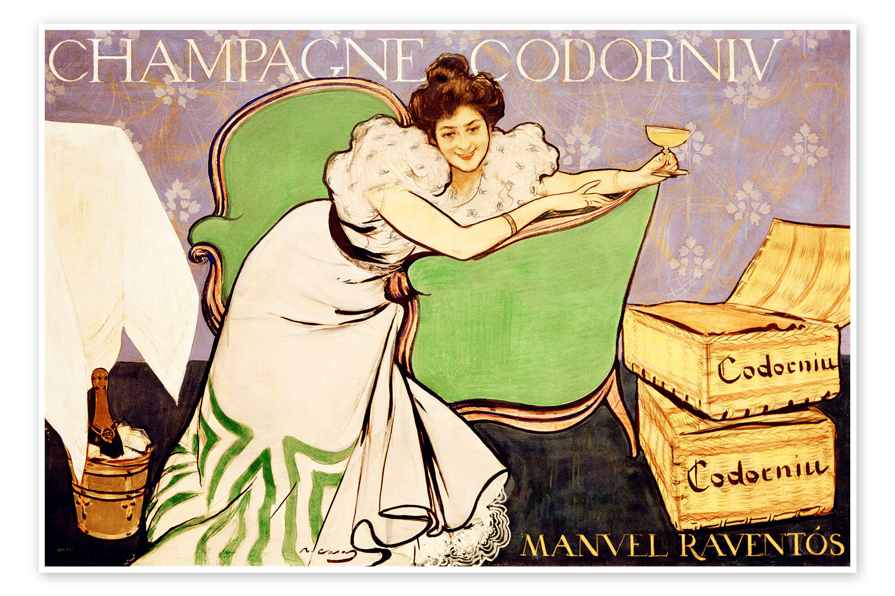

L'art surt al carrer
El Modernisme va trencar els murs dels museus. Gràcies a la publicitat, les tanques i parets de la ciutat es van convertir en una immensa galeria d'art a l'aire lliure.
Pintors de la talla de Ramon Casas o Alexandre de Riquer van posar el seu talent al servei de marques com Anís del Mono o Codorniu, creant obres mestres efímeres.
Característiques del Cartell al detall


